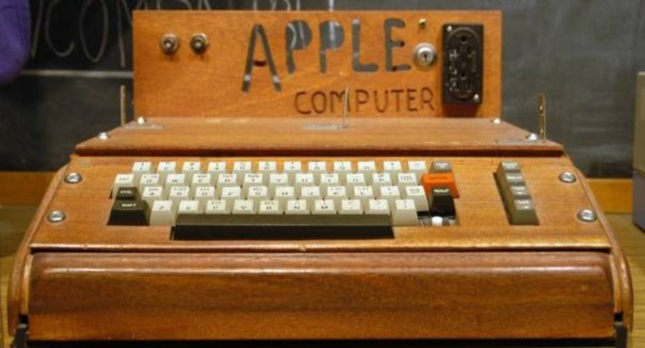
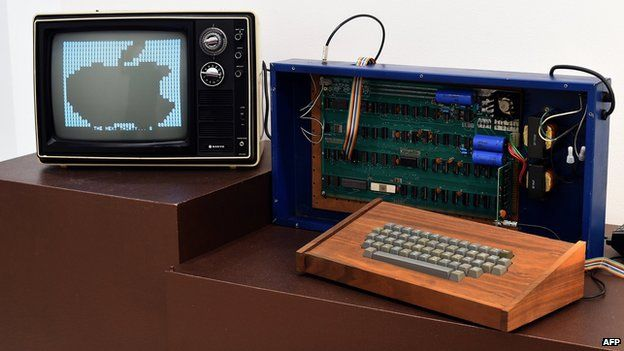

Apple Computer 1 (pozniej rowniez Apple I i Apple-1) - komputer stacjonarny wydany w 1976 roku przez Apple Computer (obecnie Apple Inc.).
Zostal zaprojektowany i recznie wykonany przez Steve'a Wozniaka.
Przyjaciel Wozniaka, Steve Jobs, wpadł na pomysl sprzedazy komputera.
Aby sfinansować stworzenie maszyny Jobs sprzedał posiadanego Volkswagena T2, a Wozniak - swoj programowalny kalkulator HP-65.

Zaprojektowany został przez Steve'a Wozniaka, jednego z załozycieli firmy Apple i wszedl do sprzedazy w kwietniu 1976 za 666,66 USD. Poczatkowo wyprodukowano 200 sztuk.
W odroznieniu od innych owczesnych komputerow przeznaczonych dla hobbystow, ktore byly sprzedawane w formie "zrob to sam", Apple I byl sprzedawany juz w pelni zlozony - na jego PCB zamontowanych było ponad 60 roznego typu ukladow scalonych.
Aby jednak uzyskac w pelni funkcjonalny komputer, jego uzytkownicy musieli jeszcze dodac obudowe, zasilacz, klawiature i monitor. Apple I byl pierwszym powszechnie dostepnym komputerem korzystajacym z klawiatury i monitora.